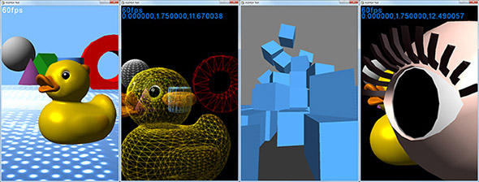

HSP : Hot Soup Processor ver3.6 / onion software 1997-2020(c)
標準スプライトプログラミングガイド
はじめに
HGIMG4は、Hot Soup Processor ver3.6以降とともに使用することで、画面の描画に関する様々な機能拡張を提供します。
-
HGIMG4の特徴
- OpenGL/ESまたはDirectX9による描画、シェーダー言語サポート
- シーン管理と統合化された物理エンジン(Bullet)サポート
- FBX形式のモデルファイル読み込み、アニメーションサポート
- カスタムシェーダーによるマテリアル、ライティングをサポート
- フォントデータ(TTF)のレンダリングサポート
- オフスクリーンレンダリング及び各種ポストエフェクトサポート
- WindowsだけでなくLinux,iOS,Android,WebGL上での動作をサポート
- HSP及びHSP3Dishと同様のライセンス規約、オープンソース
